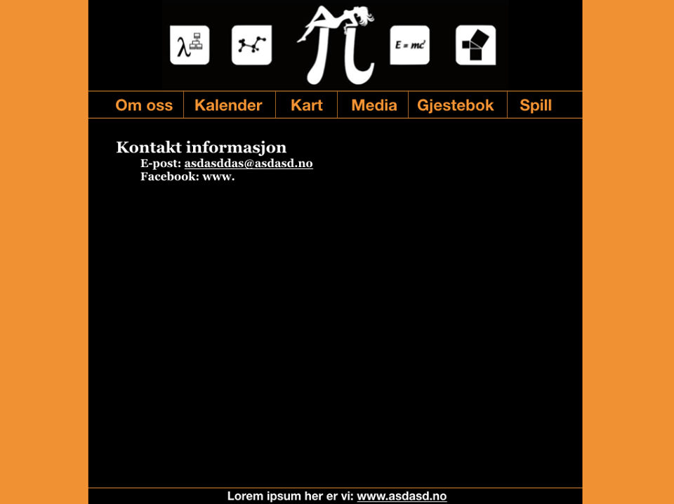

Administrative Details
- Client Name: Realfagskjelleren
- Contact Person: Andreas F. Eikeland, the leader of Realfagskjelleren

Purpose, Goals and Audience
The purpose of the website is to serve as a informationhub for Realfagskjelleren. Its main goal is to accessibly provide answers to questions students might have about Realfagskjelleren, and secondly also promote Realfagskjelleren and its interests. The targeted audience of this is mainly students
Navigation Structure
We choose a clique based structure for the navigation of Realfagskjellerens website, as seen in figure 1. Every page is reachable from the homepage through a menu on top. We thought this structure would minimize the time the user has to spend navigating from one page to the next.
- Map
- About
- Contact
- Media
- Guestbook
- Events
- Games
Page Layout and Appearance
- General page layout
- Navbar
- Fonts
- Color Scheme and links
- Shadows and Borders
All our different html pages will be built in a similar fashion. On the right and left side there will be margins each taking 20% of the webpage width. At the top, centered within the margins, we will have a custom made banner for Realfagskjelleren. Directly beneath the banner we have a navbar, also centered within the margins. The remaining place on the page is where the specific content for each site will be. The following mockup image illustrates the general layout

The navigation bar consists of six elements as shown in the mockup image above. Each element has a black background, orange font color and a border between eachother to visually show the seperation. To show which of the navbar pages we're currently viewing, the background color of the active page in the navbar is made green.

In addition to a permanent background color on the active page, the color changes when we hover over a non-active page in the navbar

To be mobile friendly we decided to use semi-large buttons for smaller screensizes.
We decided to go for Georgia as our main font, while our figures and paragraphs use Computer Modern. For both fonts we use Sans-serif as our fallback font. When it comes to font size, we use 40px for the main title, 20px for the navbar, and 14px for the body
The official color scheme for Realfagskjellern is orange. To somewhat recreate the feeling of visiting Realfagskjelleren we mix in some black and dark colors. Apart from the links used for the navbar, all the links we use will be orange, underlined and change color to blue on hover. The links in the navbar will not have any further visual effects other than what was described in the navbar section
In the media section of the website there will be several images and videos displayed in thumbnail size. clicking an image will bring up a larger version of that image, leaving the rest of the gallery in shadow. In addition, every image in the gallery is enclosed in a small border.
Content
- Homepage.html
- Contact.html
- Events.html
- Map.html
- Pictures.html
- Games.html
Minimum Requirements
- games_finn_toeren.js
- games_4chan.js
- games_terning.js
- events.js
Plan
Organizational Scheme
- homepage.html
- events.html
- map.html
- pictures.html
- contact.html
- games.html
- style.css
- js/
- games_finn_toeren.js
- games_4chan.js
- games_terning.js
- events.js
- img/
- Lorem
- ipsum
- dolor
- sit
- video/
- Lorem
- ipsum
- dolor
- sit
Work Division and Deadlines
- homepage.html
- events.html
- map.html
- pictures.html
- contact.html
- games.html
- style.css
- js/
- games_finn_toeren.js
- games_4chan.js
- games_terning.js
- events.js
- img/
- Lorem
- ipsum
- dolor
- sit
- video/
- Lorem
- ipsum
- dolor
- sit
Work Division and Deadlines
| Filename | Description | Responsible | Deadline |
|---|---|---|---|
| homepage.html | |||
| events.html | |||
| map.html | |||
| pictures.html | |||
| contact.html | |||
| games.html | |||
| map.js | |||
| games_finn_toeren.js | |||
| games_4chan.js | |||
| games_terning.js | |||
| calendar.js |